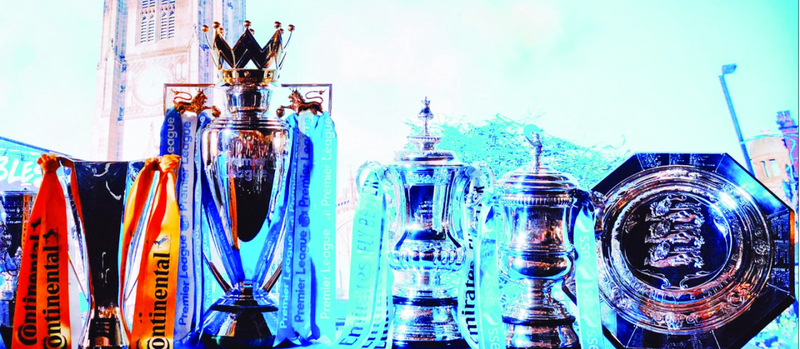

<table>
<tr>
<th>Championships</th>
<th>club stadium </th>
<th>Historic scorer</th>
</tr>
<tr>
<td><i class="fas fa-broom"></i></td>
<td><i class="fas fa-archive"></i></td>
<td><i class="fas fa-trailer"></i></td>
</tr>
<tr>
<td>
   The number of tournaments</td>
<td>Tottenham Hotspur Stadium is a football stadium located in the Tottenham area of the English capital, London, capacity: 62,850</td>
<td>The team's all-time top scorer is Jimmy Greaves with 266 goals</td>
</tr>

</table>
